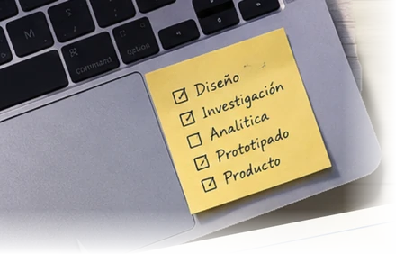
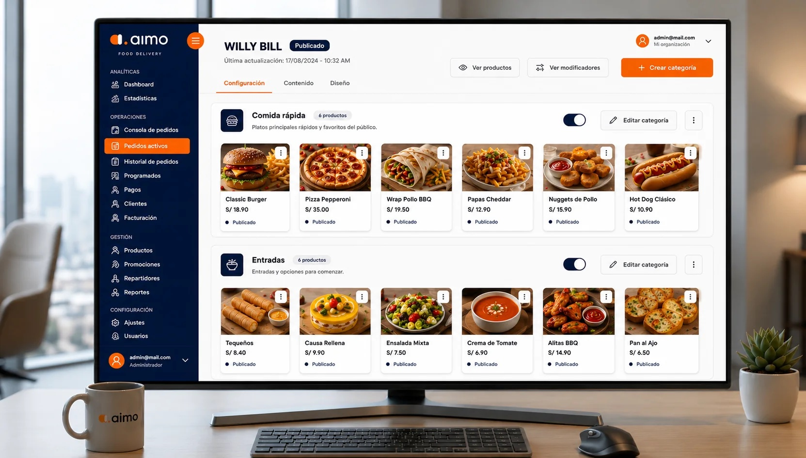
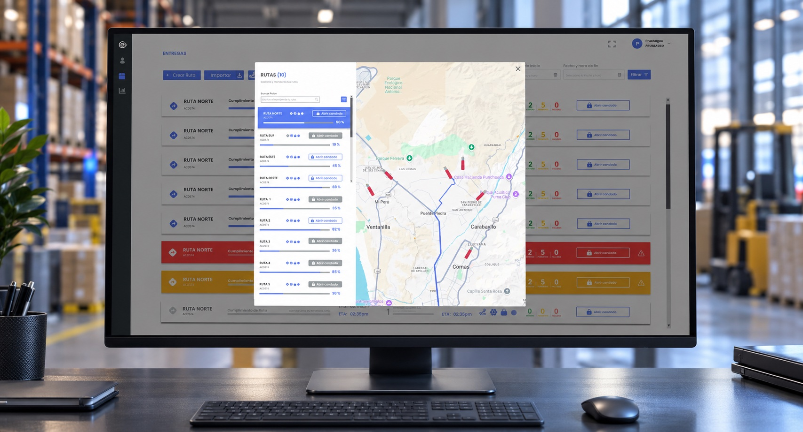
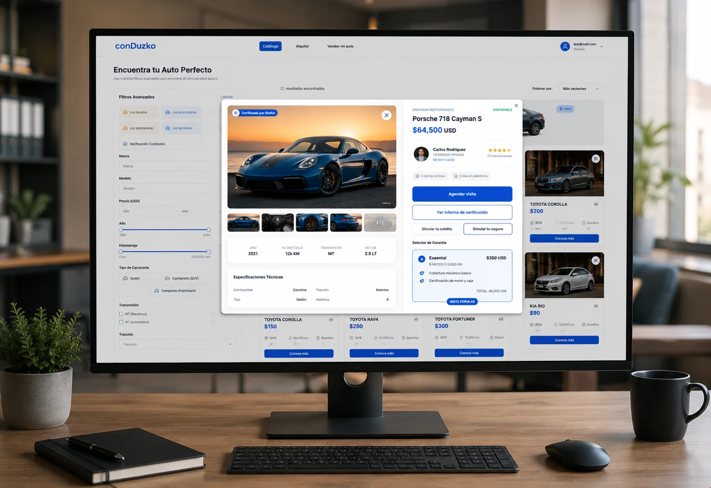
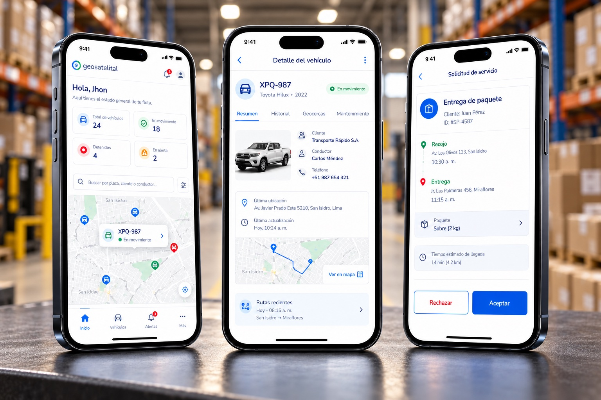

IdeasNo hay mejor producto
que el que se planifica
y se mide.
que el que se planifica
y se mide.
Ideas · Procesos
Productos · Personas
Productos · Personas
Lima, Perú
Wireframes
Flows
Prototipos
Tests
Flows
Prototipos
Tests
Bienvenido al
Portafolio de
01
01Portafolio de
José Carlos Meza
Product Designer · UX/UI
Product Designer Semi Senior. Diseño experiencias de producto a partir de research, datos y objetivos de negocio. Trabajo en e-commerce, delivery, monitoreo operativo y asistentes conversacionales.
- +4 años de
experiencia - UX/UI y
Product Analytics - E-commerce, delivery
y monitoreo - 850K+ usuarios
en analítica GA4/Clarity
FoodDelivery
Onboarding de comercios y activación de productos digitales

Web & E-commerce Ver proyecto → 02 02Satelock
Monitoreo operativo, rutas y seguimiento en tiempo real

Logística & Seguridad Ver proyecto → 03 03ConDuzko
Experiencias conversacionales con inteligencia artificial

IA Conversacional · Admin Ver proyecto → 04 04Seller Center
Experiencias de venta y procesos comerciales digitales

Mobile App Ver proyecto →